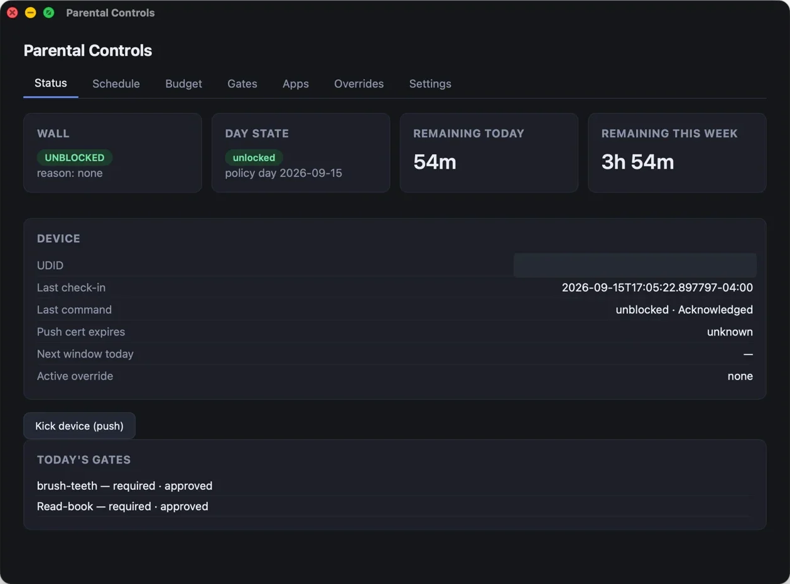
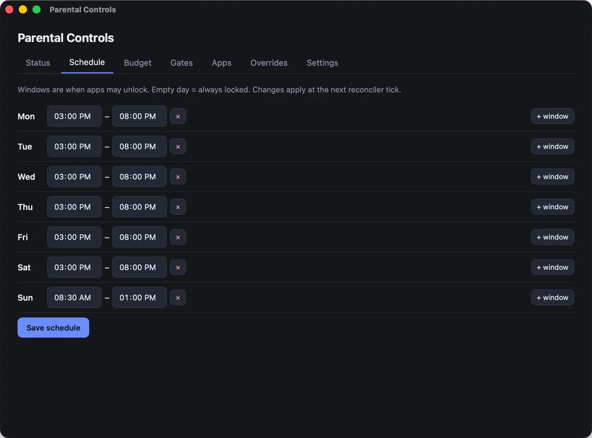
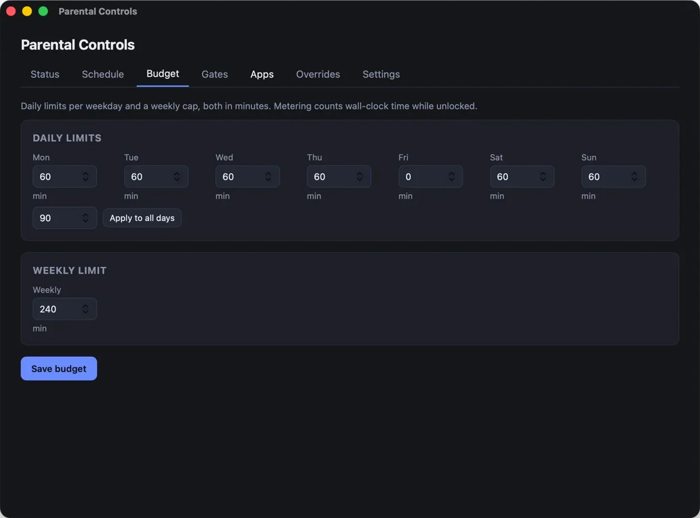
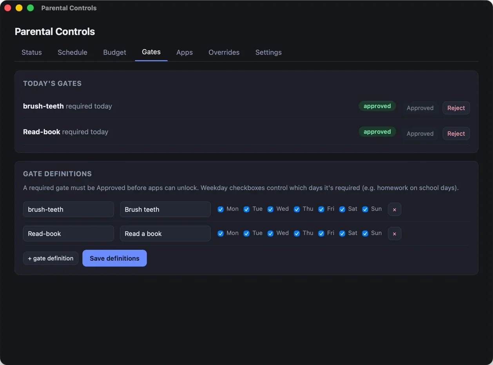
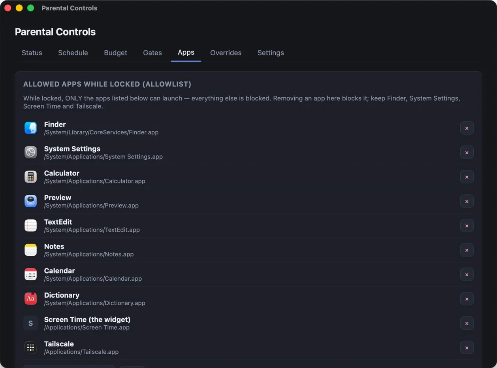
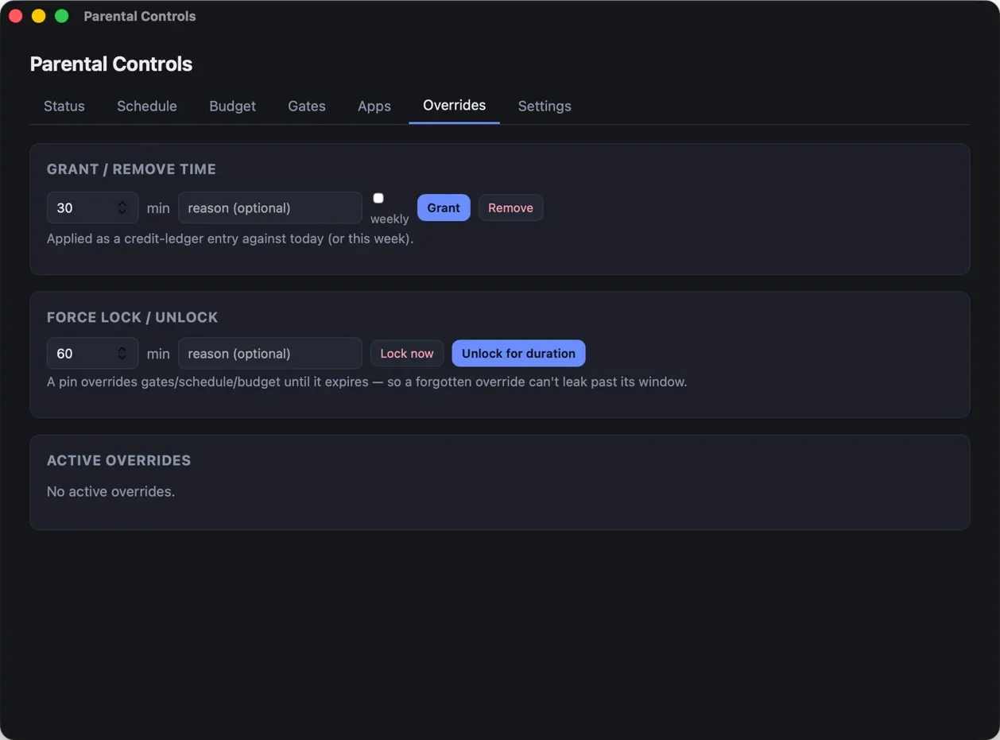
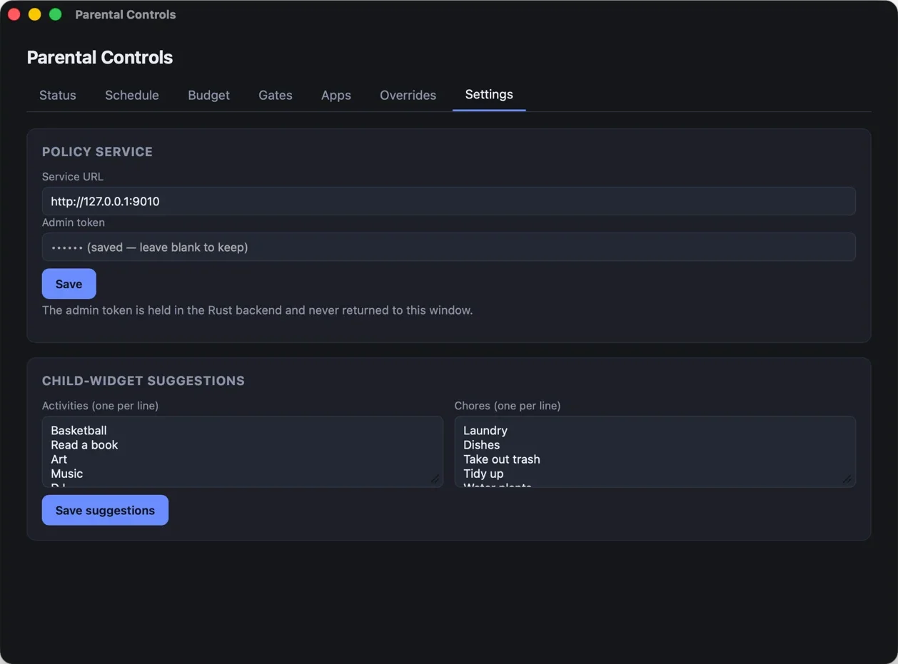

Self-hosted screen time for macOS
A small, self-hosted system that decides when a kid's Mac is allowed to run games and apps. It runs on schedules, daily budgets, and chores that have to be done first, and it's enforced through Apple's own device-management channel instead of an app he can quit.

How it works
The parent app never enforces anything, and neither does anything running on the kid's computer. An always-on policy service makes the decision, and the Mac's built-in management client carries it out.
A desktop app for editing schedules and budgets, approving gates, and granting time.
Checks every minute: are the gates approved, is a window open, is there budget left?
Self-hosted NanoMDM queues an install or remove command for the restriction profile.
Apple's push service nudges the Mac to check in, usually within a couple of seconds.
macOS applies the profile, and apps that aren't allowed simply won't open.
When the answer changes, the service sends exactly one command. The Mac confirms it through a signed webhook, so the dashboard shows what's actually in force on the device, not just what was requested.
The day
Screen time is earned rather than assumed. Each morning at the daily reset, the Mac returns to a locked state and moves forward only as conditions are met.
Some of today's required gates, like brushing teeth or reading for 30 minutes, aren't approved yet. Games stay closed.
Every gate is approved, but no schedule window is open. The Mac unlocks when the next window starts.
A window is open and budget remains. The countdown runs until the window closes or the budget runs out.
A tour of the parent app
Set the windows each weekday when apps are allowed to unlock. A day can have several windows, and a day with none stays locked all day.

Set a daily limit for each weekday plus a weekly cap. Time counts on the server's clock while apps are unlocked, so changing the Mac's clock or quitting an app doesn't pause it.

Gates are the things that have to happen first. The kid claims a gate from the menu-bar widget and a parent approves it. Each gate can be required on specific days only, like homework on school days.

An allowlist says which apps may run while locked, and everything else is blocked. There's no need to track down every game, launcher, or browser and figure out where it's installed.

Life doesn't follow a schedule. Grant or take away minutes for today or the week, lock the Mac right now, or unlock it for movie night.
Every override has an expiry, so one you forget about can't carry over into tomorrow.

While apps are locked, the kid's widget suggests other things to do: activities and chores the parent picks.
The admin token stays in the app's native backend and is never exposed to the interface.

On the kid's Mac
A small menu-bar widget shows how much time is left, why apps are locked, and when the next window opens. He can claim a gate with one tap, and it warns him at 10, 5, and 1 minutes before time runs out.
Minutes left today and this week, shown right in the menu bar.
"I did this" sends a claim to the parent to approve.
Heads-up notifications before apps lock, so ending a session is never a surprise.
Activity and chore suggestions while screens are off.
Trust model
Anything running in the kid's own login can be killed. The rules are evaluated on a separate always-on server.
It only displays status and submits claims. Quitting it takes away the countdown, not the lock.
The kid's account isn't an administrator, so it can't remove the management profile or install apps system-wide.
Every command has to be acknowledged by the Mac. If the Mac never confirms, the dashboard shows it as unconfirmed.
The widget reaches the server over a private Tailscale network. The admin interface isn't exposed to the internet.
Self-hosted end to end: no account, no subscription, and no data leaving the house.
Honest limits
These came out of testing on a real kid's real Mac.
It only stops apps from starting. macOS won't open a blocked app, but it doesn't close one that's already running. A game started during a window keeps going after the window ends, which is why the warnings matter. A small root daemon that ends sessions on time is planned.
Metering counts unlocked time, not usage. Idle minutes still count, on purpose: use your window. Parents can grant time back.
Blocklists don't hold up. Kids install apps inside their own home folders, where a list of blocked paths never reaches. That's why the app uses an allowlist for locked time.
One kid, one Mac. iPhones, iPads, web filtering, and multiple children aren't supported.
Under the hood